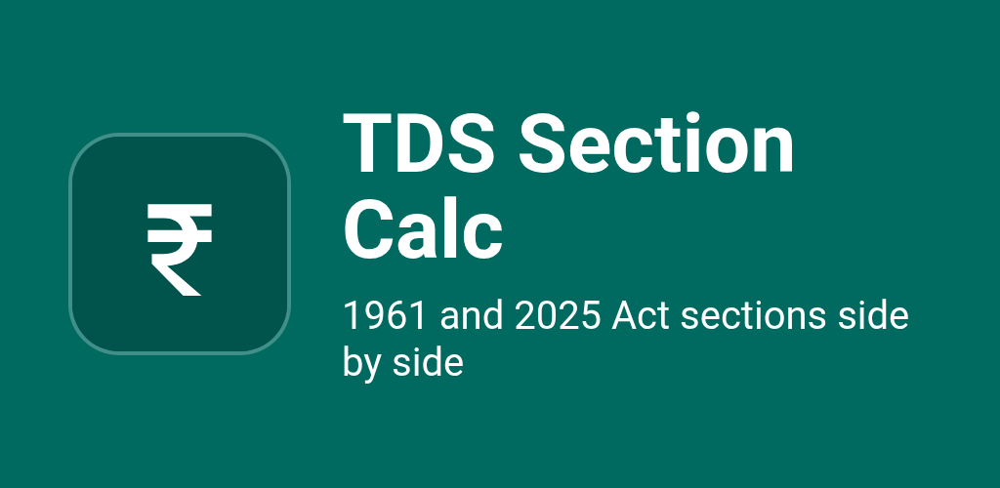
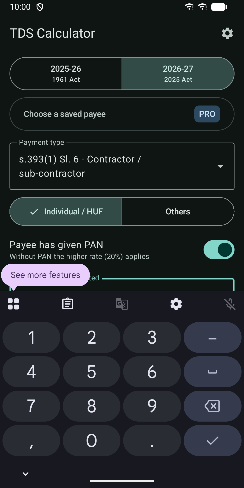
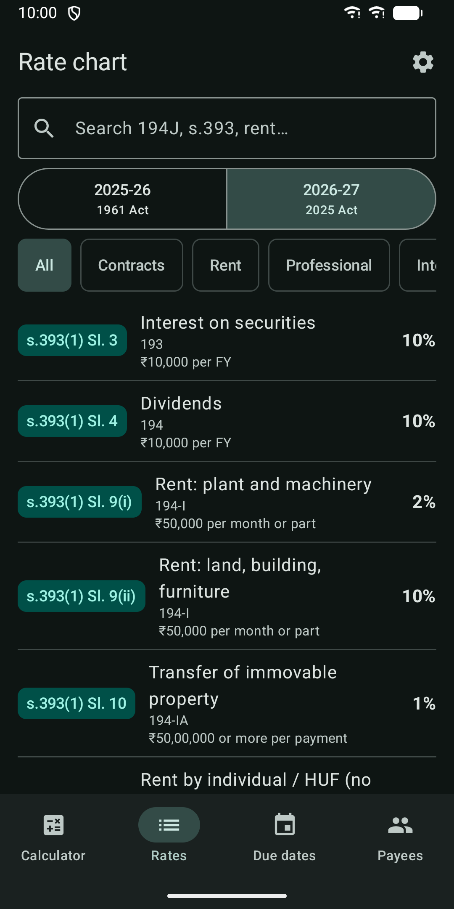
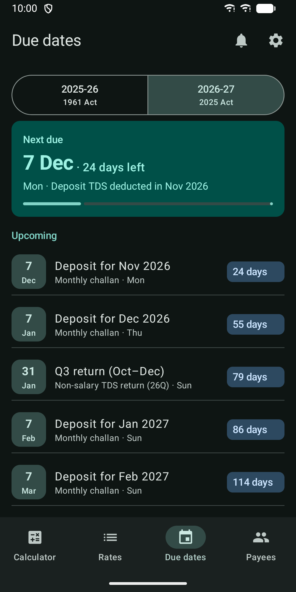
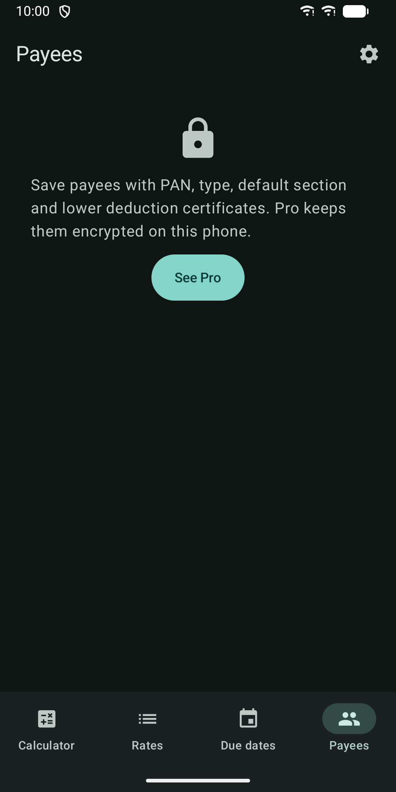

TDS Section Calc India
Calculate TDS by section with 1961 and 2025 Act numbers and due dates.





About
Work out non-salary TDS in seconds. Pick the payment type, enter the amount and see the TDS, the rate, the net payable and the section, under both numbering systems. TDS Section Calc covers FY 2025-26 (Income-tax Act 1961) and FY 2026-27 (Income-tax Act 2025). Every result shows the old and new section numbers side by side, so you can move to the new Act without a lookup table. The app has no internet access. Rates, thresholds and section numbers are bundled with the app and change only with app updates. INCLUDED IN THE FREE APP • TDS calculator for non-salary payments: contractors, rent, professional and technical fees, commission, interest, purchase of goods, property and more • Old and new section numbers on every result and in the rate chart • Financial year selector: 2025-26 (1961 Act) and 2026-27 (2025 Act) • Threshold checks per payment, per month (rent) and per financial year, with a note where an aggregate limit applies • PAN given or not given: the higher no-PAN rate is applied automatically • Individual/HUF and Others, where the rates differ • Searchable rate chart with rates, thresholds and notes for each section • Due-date calendar: monthly deposit dates (7th, and 30 April for March) and quarterly TDS return dates • Home screen widget with the next TDS due date and the days left • "Rates as of" date and app version shown with every result • Light and dark theme that follow your system setting, phone and tablet layouts, screen-reader labels PRO FEATURES (one-time purchase through Google Play, not a subscription) • Saved payees with PAN, payee type and default section, encrypted on your phone • Lower or nil deduction certificates with rate, validity and limit. The calculator uses the certificate rate while it is valid and within its limit • Calculation history per payee, and aggregate threshold checks across the financial year • Export a working sheet as PDF or Excel (.xlsx) through the share sheet. PAN is masked by default • Due-date reminders 1 to 7 days ahead • Interest and late-fee calculator: late deduction, late deposit and late filing fee • Password-encrypted backup and restore through the file picker • App lock with fingerprint, face or screen lock YOUR DATA • No account and no tracking. The app has no internet permission • Payee data is encrypted on your phone with a key held in the Android Keystore • The app is excluded from cloud backup. Your data leaves the phone only when you export or back it up • Reminders and the widget show due dates only, never names or PAN Made for small businesses, accountants and CAs, and freelancers who deduct TDS on payments to contractors, landlords, professionals and agents. Please note: results are estimates and not tax advice. Check the Act, rules and notifications before you deduct, deposit or file. Salary TDS (s.192), TCS, non-resident payments and return filing are not covered.